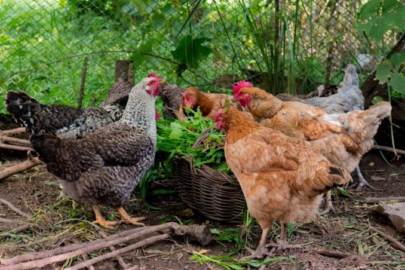

a galinha caipira é uma ave muito comun em sitios, cooperativas rurais, como a nossa. Ela é criada solta, se alimenta de milho e restos de comidas, e é conhecida por dar ovos de cascas mais "
além dos ovos, a galinha caipira tambem é criada para o corte, sendo parte importante da economia de pequenos produtores.
Saiba mais sobre a galinhaficha produzida para aula de programação Web